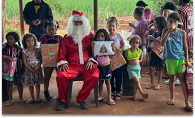

Em Andamento
Comunidade da Dona Sirlene
Entrega regular de brinquedos, materiais escolares e cestas básicas para famílias em situação de vulnerabilidade.
Saiba maisA Musiqueiros nasceu da paixão pela música e do desejo de transformar realidades sociais.
Somos uma organização comprometida com a transformação social por meio de diversas ações de caridade. Embora os fundadores tenham uma trajetória ligada à música, a instituição concentra seus esforços em promover projetos que beneficiam diferentes segmentos da sociedade, como crianças, idosos e pessoas com deficiência, contribuindo para o desenvolvimento e a inclusão social.
Conheça nossa históriaConheça algumas de nossas principais iniciativas sociais
Entrega regular de brinquedos, materiais escolares e cestas básicas para famílias em situação de vulnerabilidade.
Saiba maisEntrega de presentes de Natal e programas culturais para integração da comunidade.
Saiba maisDoação de roupas, cobertores e alimentos para comunidades durante o período de inverno.
Saiba maisExistem várias maneiras de fazer parte dessa transformação
Compartilhe seu tempo e habilidades. Precisamos de pessoas em diversas áreas, desde música até comunicação e logística.
Inscreva-seSua contribuição financeira ou material ajuda a manter nossos projetos e ampliar nosso alcance nas comunidades.
ContribuirConhece alguma comunidade ou instituição que precisa de apoio? Compartilhe conosco e ajude a expandir nossa rede.
IndicarDepoimentos de pessoas impactadas pelo nosso trabalho
"A Musiqueiros mudou minha vida. Nunca imaginei que poderia aprender a tocar violino e hoje faço parte de uma orquestra! Os professores são incríveis e me deram uma nova perspectiva de futuro."

Ana Clara
16 anos, aluna desde 2021
"Ver meu filho se desenvolvendo através da música é uma alegria imensa. Sou muito grata à Musiqueiros pela oportunidade e pelo cuidado com que tratam cada criança. Notei mudanças positivas não só nas habilidades musicais dele, mas também no comportamento e concentração na escola."

Regina Santos
Mãe de aluno, Comunidade Quitéria
"Como voluntário na Musiqueiros há 5 anos, posso dizer que a experiência transformou minha visão de mundo. Ver o impacto direto que fazemos na vida das pessoas é algo que não tem preço. Recomendo a todos que querem fazer a diferença."

Carlos Ferreira
Professor de música, voluntário
Empresas e instituições que acreditam em nosso trabalho


Interessado em ser um parceiro? Entre em contato
Sua participação é fundamental para continuarmos transformando vidas por meio da música e ações sociais.